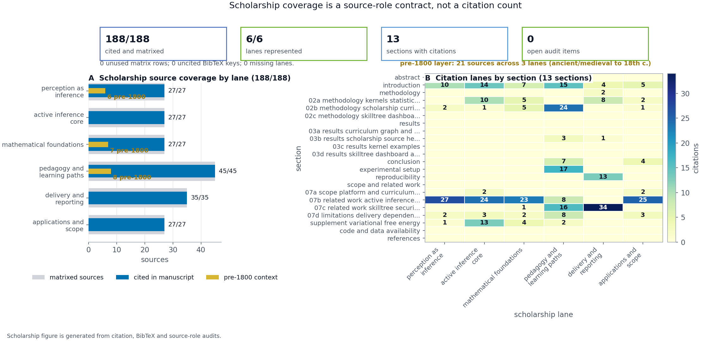
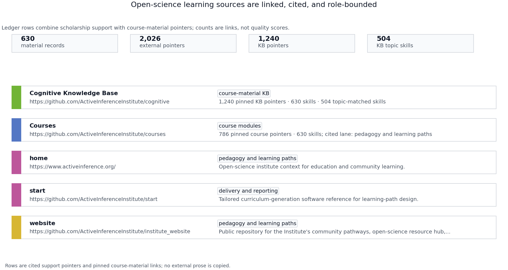
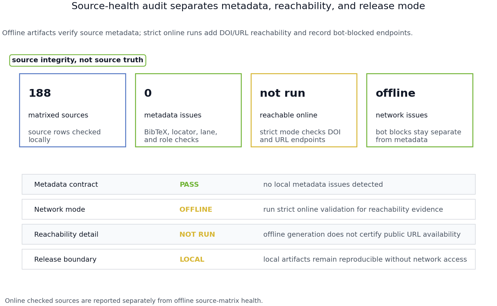
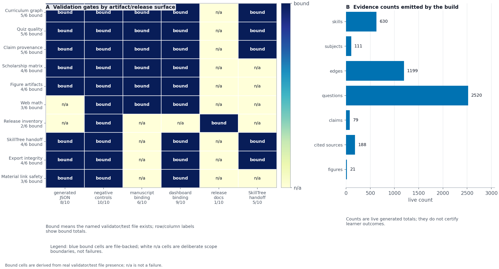
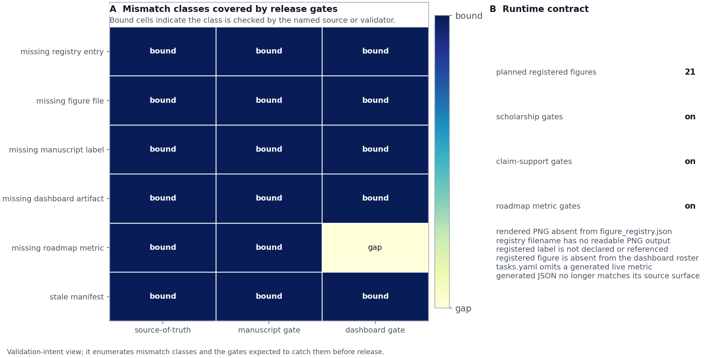
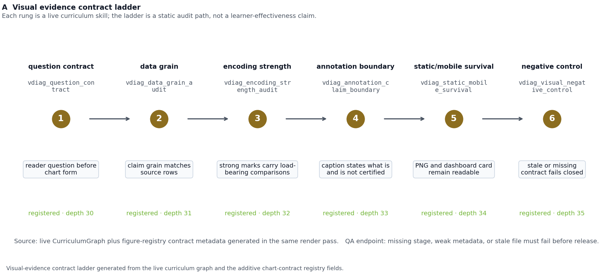
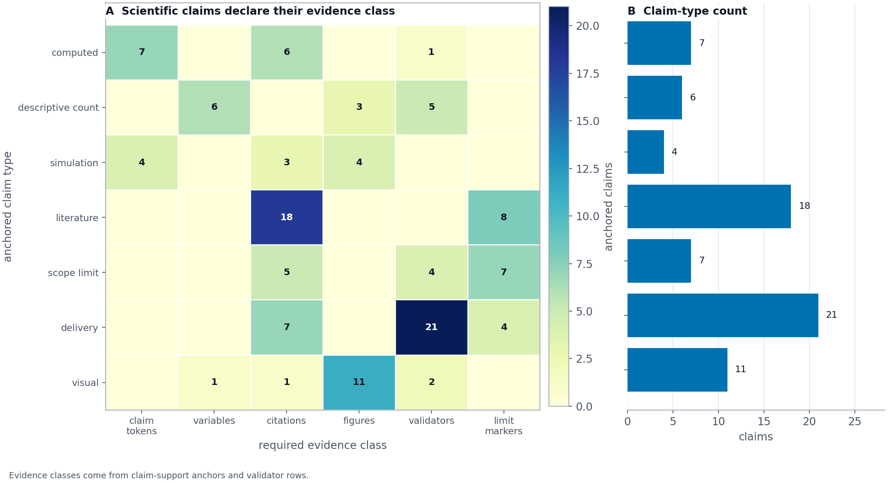

Results: Scholarship Coverage and Evidence-Status Audits
Citation coverage, locator health, and evidence-class auditing
The manuscript’s source coverage is also treated as a generated
result. Every authored citation is parsed from the section files,
matched against references.bib, and mapped through
data/scholarship_sources.yaml into a source lane and
support role before the build writes figures. The current audit covers
188 cited sources; that number is generated from the manuscript and
source matrix, not maintained as a prose claim. [@fig:scholarship_coverage]
shows both sides of the contract: the left panel compares cited sources
with the matrixed source pool for each lane, while the right panel shows
which manuscript sections carry each lane. The audit is deliberately
orthogonal to the numeric claim registry: one gate protects computed
quantities; the other protects the scholarly support surface.

The open-science education layer is also explicit. Active Skillference cites the Active Inference Institute’s public education ecosystem, including the open-source course infrastructure, the START curriculum-generation project, and the Institute website’s open-science educational mission [activeinferenceinstitute2026courses; activeinferenceinstitute2026start; activeinferenceinstitute2026home]. The generated local Learn material also links every exported skill to commit-pinned external material pointers, including the Active Inference Institute cognitive knowledge base [activeinferenceinstitute2026cognitive]. [@fig:open_science_sources] shows both surfaces together: cited public sources remain visible, and the course-material source rows expose how the cognitive knowledge base enters the generated skill records.

The source matrix is then checked a second way: source locators must be syntactically specific, documentation entries must use URL locators, and each support role must be substantive enough to explain why the source is present. [@fig:scholarship_source_health] reports the resulting offline source-health audit and provides a place for optional online DOI/URL reachability checks to surface when release review requires currentness evidence.

The validation surface is intentionally visible rather than left as a hidden CI detail. [@fig:validation_surface_matrix] summarizes which gates bind generated JSON, negative controls, manuscript text, dashboard artifacts, release documentation, and SkillTree handoffs. Its count panel is rebuilt from the same graph, claim registry, scholarship audit and roadmap state that produce the curriculum and manuscript variables. The result is a falsifiable release claim: if a count, citation, figure, dashboard artifact, release inventory row, or roadmap item drifts away from its generator, the validator fails before the manuscript or SkillTree export can be presented as current.

[@fig:validation_intent_mismatch_matrix] makes the negative controls behind that release view explicit. It separates missing registry rows, missing files, missing manuscript labels, missing dashboard artifacts, missing roadmap metrics, and stale manifests so the validation layer is judged by concrete false-certification classes rather than by the presence of a polished figure alone.

The same contract is now represented inside the curriculum rather than only enforced at release time. The visual-evidence slice adds a prerequisite-gated authoring path for question contracts, data grain, encoding strength, annotation boundaries, static/mobile readability, and negative-control validation. [@fig:visual_evidence_contract_ladder] shows that path as generated curriculum evidence: each rung names the live skill that carries the review step, while the registry and dashboard expose the same structured chart-contract fields. This is a deterministic artifact-integrity claim, not a claim that the visual curriculum has been externally tested with learners.

The scientific-claim layer adds one more audit view. [@fig:scientific_evidence_matrix]
is generated from manuscript claim-support anchors and the
support matrix in data/manuscript_claim_support.yaml. Its
rows separate computed, descriptive-count, simulation, literature,
scope-limit, delivery and visual claims; its columns show whether each
class is backed by claim tokens, manuscript variables, citations,
figures, validators or limitation markers. This is not a statistical
result. It is a release integrity check that prevents strong scientific
wording from passing without a declared evidence class.

The platform evidence above is intentionally separated from the small mathematical examples. Those examples are still central teaching artifacts, but their scientific meaning depends on the supplement’s model assumptions and regime boundaries.